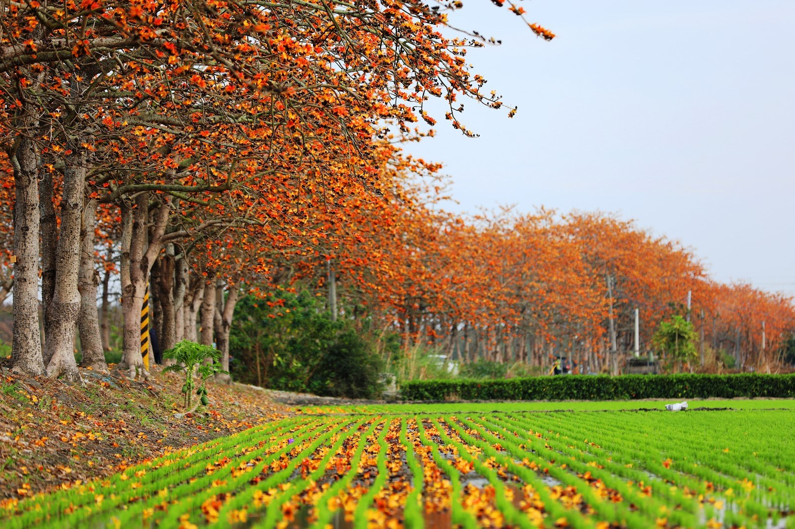

春｜東螺溪木棉花道
沿著火紅花道，慢慢走進春天。

看什麼
木棉花在枝頭盛放，橘紅花色與周圍綠色田野形成對比。適合觀察河岸地景、花朵與農村道路的關係。
怎麼玩
順著花道緩步散策，先欣賞成排樹冠，再看落花與田野細節。建議預留約30–45分鐘，時間為本網站行程建議。
拍照重點
以花道的延伸方向構圖，把紅色樹冠與綠色田野一起帶入畫面。避開車道與農地，不為拍照擋住通行。
照片為來源網站之實景紀錄；花況、供餐與活動以場域最新公告及預約確認為準。
 餓，林時起意！ERLIN SLOW TRAVEL
餓，林時起意！ERLIN SLOW TRAVEL沿著火紅花道，慢慢走進春天。

木棉花在枝頭盛放，橘紅花色與周圍綠色田野形成對比。適合觀察河岸地景、花朵與農村道路的關係。
順著花道緩步散策，先欣賞成排樹冠，再看落花與田野細節。建議預留約30–45分鐘，時間為本網站行程建議。
以花道的延伸方向構圖，把紅色樹冠與綠色田野一起帶入畫面。避開車道與農地，不為拍照擋住通行。